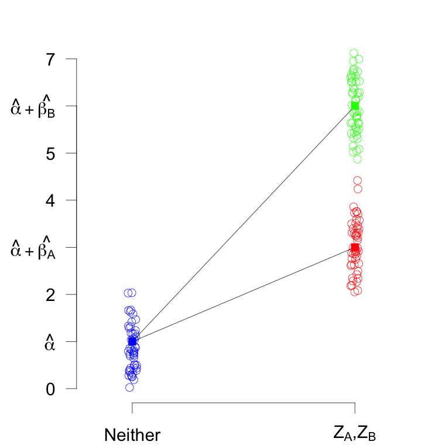
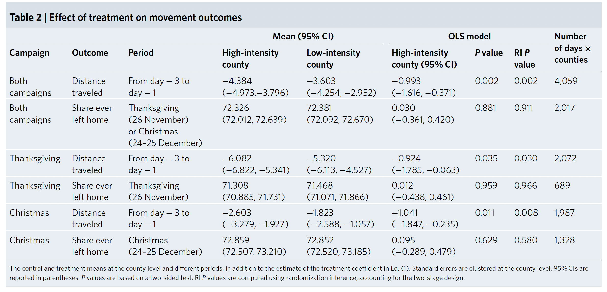

lm_robust(Energy ~ Coffee * Sport, data = df)8 Estimation 2
9.1 A Quick Reminder
- Remember: Analyze as you randomize
- We prefer estimators that are unbiased and have greater precision
- Hypothesis testing can be simple with linear regression
9.2 Multiple Arm Experiments
9.2.1 Estimator 1: Difference-in-Means
| \(Z_A\) only | \(Z_B\) only | Neither (control) |
- We can always take the difference-in-means between any two groups.
9.2.2 Estimator 2: Linear regression
\[Y_i = {\alpha} + {\beta_A} Z_{Ai} + {\beta_B} Z_{Bi} + e_i\] \[Y_i = {\alpha} + {\beta_A} Z_{Ai} + {\beta_B} Z_{Bi} + {\gamma} X_i + e_i\]
- Regression with an indicator variable for each of the two treatment arms.
- \(Z_{Ai}=1\) if unit \(i\) has treatment \(Z_A\), 0 otherwise
- \(Z_{Bi}=1\) if unit \(i\) has treatment \(Z_B\), 0 otherwise
- We can also do covariate adjustment at the same time.
9.2.3 Estimator 2: Linear regression
\[Y_i = {\alpha} + {\beta_A} Z_{Ai} + {\beta_B} Z_{Bi} + e_i\]
- \(\hat{\beta_A}\) is the \(\widehat{ATE}\) of \(Z_A\) (compared with control).
- \(\hat{\beta_B}\) is the \(\widehat{ATE}\) of \(Z_B\) (compared with control).
- How do we estimate the effect of \(Z_B\) compared to \(Z_A\)?
9.2.4 Estimator 2: Linear regression

\(Z_A\) only
\(Z_B\) only
Neither (control)
\[Y_i = {\alpha} + {\beta_A} Z_{Ai} + {\beta_B} Z_{Bi} + e_i\]
9.2.5 Estimators for Multi-arm Designs
9.3 Block Randomization
9.3.1 Block Randomization
- Block randomization is like doing a separate experiment in each block.
- We present 2 estimators for block randomization. Others are also available.
9.3.2 Estimator 1: Blocked Difference-in-Means
- Calculate the \(\widehat{ATE_j}\) for each block using difference in means. \(j\) indicates which block.
- The \(\widehat{ATE}\) is the average of the block-level \(\widehat{ATE_j}\) weighted by block size \(N_j / N\).
- You can use this estimator even when the probability of treatment assignment is different by blocks.
9.3.3 Estimator 1: Blocked Difference-in-Means
| Unit | Block | \(Z_i\) | \(Y_i\) |
|---|---|---|---|
| a | Q | 0 | 4 |
| b | Q | 1 | 3 |
| c | Q | 0 | 2 |
| d | R | 1 | 3 |
| e | R | 0 | 0 |
| f | R | 0 | 2 |
| g | S | 1 | 4 |
| h | S | 0 | 0 |
| i | S | 0 | 2 |
| j | S | 1 | 4 |
9.3.4 Estimator 2: Linear Regression with Block Fixed Effects
\[Y_{ij} = \alpha_0 + \beta_1 Z_{ij} + \gamma_A BlockA_{ij} + \gamma_B BlockB_{ij} + ... + \epsilon_{ij}\]
- You can use linear regression with block fixed effects, applying weights to each observation.
- The weight is the inverse of the proportion of subjects in the same block who were assigned to the same condition.
\[w_{ij} = \frac{z_i}{p_{ij}} + \frac{1-z_i}{1-p_{ij}} \text{, where } p_{ij}\equiv\frac{m_j}{N_j}\]
9.3.5 Block randomization in R
library(estimatr)
difference_in_means(Y ~ t, blocks = block_variable)
lm_robust(Y ~ treatment + as.factor(block_variable),
weights = weight_variable)9.4 Cluster Randomization
9.4.1 Estimator: Regression with cluster-robust standard errors
\[Y_{ic} = {\alpha_0} + {\beta_1} Z_{c} + e_{ic}\] \[Y_{ic} = {\alpha_0} + {\beta_1} Z_{c} + {\gamma} X_{ic} + e_{ic}\]
- Our analysis has to take into account the fact that treatment is assigned at the cluster level with cluster-robust standard errors.
- \(\hat{\beta_1}\) is the \(\widehat{ATE}\) of the treatment on individual units.
- We can also do covariate adjustment at the same time.
9.4.2 Cluster randomization

library(estimatr)
lm_robust(Y ~ treatment, clusters = cluster_variable)
lm_robust(Y ~ treatment + covariate, clusters = cluster_variable)9.5 Factorial Design
9.5.1 Estimator 1: Difference-in-Means
| \(Z_2 = 0\) | \(Z_2 = 1\) | Effect of \(Z_2\) | |
|---|---|---|---|
| \(Z_1 = 0\) | Neither | \(Z_2\) only | \(\beta_2\) |
| \(Z_1 = 1\) | \(Z_1\) only | Both \(Z_1\) and \(Z_2\) | \(\beta_2 + \beta_3\) |
| Effect of \(Z_1\) | \(\beta_1\) | \(\beta_1 + \beta_3\) | \(\beta_3\) (diff-in-diff) |
- We use factorial design when we are interested in interaction effects.
- If we have a 2×2 factorial design, we have four groups.
- We can always take the difference-in-means between any two groups.
9.5.2 Estimator 2: Linear Regression with an Interaction Term
\[Y_i = {\alpha_0} + {\beta_1} Z_{1i} + {\beta_2} Z_{2i} + {\beta_3} Z_{1i}*Z_{2i} + e_i\] \[Y_i = {\alpha_0} + {\beta_1} Z_{1i} + {\beta_2} Z_{2i} + {\beta_3} Z_{1i}*Z_{2i} + {\gamma} X_i + e_i\]
- Indicator variables for \(Z_1\) and \(Z_2\).
- We can also do covariate adjustment at the same time.
9.5.3 Estimator 2: Linear Regression with an Interaction Term
| \(Z_2 = 1\) | \(Z_2 = 0\) | |
|---|---|---|
| \(Z_1 = 1\) | Both \(Z_1\) and \(Z_2\) | \(Z_1\) only |
| \(Z_1 = 0\) | \(Z_2\) only | Neither |
\[Y_i = {\alpha_0} + {\beta_1} Z_{1i} + {\beta_2} Z_{2i} + {\beta_3} Z_{1i}*Z_{2i} + e_i\]
- Estimand: \(E[Y(Z_1=1)| Z_2=0] - E[Y(Z_1=0) | Z_2=0]\)
- \(\hat{\beta_1}\) is the \(\widehat{ATE}\) of \(Z_{1}\) conditional on \(Z_{2}=0\).
9.5.4 Estimator 2: Linear Regression with an Interaction Term
| \(Z_2 = 1\) | \(Z_2 = 0\) | |
|---|---|---|
| \(Z_1 = 1\) | Both \(Z_1\) and \(Z_2\) | \(Z_1\) only |
| \(Z_1 = 0\) | \(Z_2\) only | Neither |
\[Y_i = {\alpha_0} + {\beta_1} Z_{1i} + {\beta_2} Z_{2i} + {\beta_3} Z_{1i}*Z_{2i} + e_i\]
- Estimand: \(E[Y(Z_1=1) | Z_2=1] - E[Y(Z_1=0) | Z_2=1]\)
- \(\hat{\beta_1} + \hat{\beta_3}\) = \(\widehat{ATE}\) of \(Z_{1}\) conditional on \(Z_{2}=1\)
- \(\beta_3\) is called the interaction effect.
9.5.5 Estimator 2: Linear Regression with an Interaction Term
| Model 1 | |
|---|---|
| (Intercept) | 0.15 |
| (0.14) | |
| Coffee | 0.42* |
| (0.19) | |
| Sport | 0.27* |
| (0.13) | |
| Coffee:Sport | 0.26 |
| (0.19) | |
| R2 | 0.16 |
| Adj. R2 | 0.14 |
| Num. obs. | 100 |
| RMSE | 0.97 |
| ***p < 0.001; **p < 0.01; *p < 0.05 | |
\[\hat{Y} = 0.154 + 0.422 \times Coffee + 0.270 \times Sport + 0.260 \times Coffee \times Sport \]
9.5.6 Estimator 2: Linear Regression with an Interaction Term
| \(\hat{Y} |\) Coffee = 0, Sport = 0 | \(\hat{\alpha} =\) 0.154 |
| \(\hat{Y} |\) Coffee = 0, Sport = 1 | \(\hat{\alpha} + \hat{\beta}_2 =\) 0.424 |
| \(\hat{Y} |\) Coffee = 1, Sport = 0 | \(\hat{\alpha} + \hat{\beta}_1 =\) 0.576 |
| \(\hat{Y} |\) Coffee = 1, Sport = 1 | \(\hat{\alpha} + \hat{\beta}_1 + \hat{\beta}_2 + \hat{\beta}_3 =\) 1.105 |
| \(\widehat{ATE}\) of Coffee | Sport = 0 | \(\hat{\beta}_1 =\) 0.422 |
| \(\widehat{ATE}\) of Coffee | Sport = 1 | \(\hat{\beta}_1 + \hat{\beta}_3 =\) 0.681 |
| Interaction effect | \(\hat{\beta}_3 =\) 0.260 |
\[\hat{Y} = 0.154 + 0.422 \times Coffee + 0.270 \times Sport + 0.260 \times Coffee \times Sport \]
9.6 Encouragement design
9.6.1 Encouragement design
- Situation: You can’t force people to take (receive) your treatment. Treatment assigned is not the same as treatment received.
- We can randomize encouragement \(Z\) to take the treatment, such as a request to drink coffee or offering a subsidy to participate in a program.
- We measure the encouragement \(Z\), taking the treatment \(D\), and the outcome \(Y\).
- We analyze using instrumental variables techniques (two stage least squares).
9.6.2 Encouragement design: Code
df <- fabricate(N = 1000, Z = complete_ra(N),
complier = complete_ra(N),
D = Z*complier,
Y = complier + D + rnorm(N)/100)
df |> head() |> kable()| ID | Z | complier | D | Y |
|---|---|---|---|---|
| 0001 | 1 | 1 | 1 | 1.9865329 |
| 0002 | 0 | 0 | 0 | 0.0117194 |
| 0003 | 0 | 0 | 0 | -0.0190874 |
| 0004 | 0 | 0 | 0 | -0.0100439 |
| 0005 | 0 | 0 | 0 | 0.0067669 |
| 0006 | 1 | 1 | 1 | 2.0115232 |
9.6.3 Encouragement design: Code
list(
ITT = lm_robust(Y ~ Z, data = df),
WRONG = lm_robust(Y ~ D, data = df),
CACE = iv_robust(Y ~ D | Z, data = df)) |>
texreg::htmlreg(include.ci = FALSE,)| ITT | WRONG | CACE | |
|---|---|---|---|
| (Intercept) | 0.52*** | 0.34*** | 0.52*** |
| (0.02) | (0.02) | (0.02) | |
| Z | 0.44*** | ||
| (0.05) | |||
| D | 1.66*** | 0.92*** | |
| (0.02) | (0.07) | ||
| R2 | 0.07 | 0.75 | 0.60 |
| Adj. R2 | 0.07 | 0.74 | 0.60 |
| Num. obs. | 1000 | 1000 | 1000 |
| RMSE | 0.79 | 0.41 | 0.52 |
| ***p < 0.001; **p < 0.01; *p < 0.05 | |||